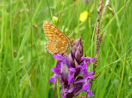

Ten piękny motyl pochodzi z rodziny rusałkowatych oraz jest ściśle chroniony. Gatunek występuje najczęściej w środkowej części kontynentu. W Polsce znajdują się 3 główne siedliska tych owadów.
| Domena | eukarionty |
|---|---|
| Królestwo | zwierzęta |
| Typ | stawonogi |
| Gromada | owady |
| Podgromada | uskrzydlone |
| Rząd | motyle |
| Rodzina | rusałkowate |
| Rodzaj | Euphydryas |
| Gatunek | przeplatka maturna |
